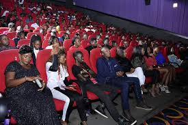

Muwonge,Khalifan (at) Makerere University
Kabugo ,Daniel (at)Makerere University
Nuwagaba,Raymond (at) Makerere University
Kiberu,Nuhu (at) Makerere University
Muhangi,Adrone (at) Makerere University
github repository
Makerere University
Kampala, Uganda
CINEMA JUNKIE
This project is about creating a mobile application that will address problems faced by cinema users in Uganda. The market for cinemas in Uganda is growing gradually as it cuts across all ages from the four year old whose parents take to the movies on the weekend to family men and women who occasionally take a break in some of Uganda’s best cinemas and people of all categories, it has basically become a community. These people, should now have the power to fit their movie plans in their tight schedules, get the seats they desire and have tickets on their phones (app) the whole time.
Why a cinema App?
A mobile application that can access a given cinema or more’s movie schedules for a week, and then display them with the required movie information, description and date. The users then book their desirable seat(s) at whichever time they will be free before it’s taken, and of course, to book a ticket, one must pay in advance using services like MTN MOMO PAY and have their digital ticket sent to them so they just present their digital ticket at the counter and get in. Cool and contact less right!
This project has been established with help of google's firebase api and MTN momo open api and the prototype is based android native devices for now. These technologies make it quite easy to implement our solutions to user's problems on a hand held device. This is an age of the internet full of people looking at their phones every second, everywhere you set your eyes, why? Because it is convenient and this convenience should also be extended to the movie community in Uganda.
Issues to be tackled
During our prelimenary investigations, we gathered most of the common problems faced by a usual cinema user. We went on to analyse and came up with a list of the common and quick to iron out challenges the first application roll out should address and they included;
- Wasting of time to go watch a movie yet all the tickets have been sold out and you had no prior knowledge of the issue.
- Not knowing movie screening times without actually coming physically to conform.
- Losing out on the best seats in the cinema halls because they did not make it in time to the counter
- Enduring long movie ticket buying queues that also put people at risk of contracting the virus now days.
- Keeping track of your ticket and lowering the risk of losing it greatly because at the moment if you lose one you have to by another and young kids always make their perents fall victim.
- Seat spacing can also make it quite easy to to follow Covid 19 prevention SOPS. Watching safely
- Adding owner ship to a ticket becouse most cinemas currently just issue out tickets randomly, if someone gets anothers ticket throw the wrong means they can easily use it.
Some of the major user interfaces!
The above issues can easily be solved easily with a mobile booking system. The screens below display the prototype's progress so far, quite descriptive and user friendly
There is still room for more features and interesting use cases, the idea is to make the application as clear as possible to the users. Designs were and are being implemented in xml and the back end plus the front end in Java using the MVVM architecture. To see a video showing functionality operation of the prototype on the next page, click here
In the long run.
 Such an innovation will it not only assist the cinema movie clients but also help promote our local media industry here in Uganda, keeping people updated of new media content created by their own country men and women. It could also be expanded with more features and better user busness starategies like discounts basing on number of seats one has bought, promotion days where a user can win a free or extra ticket, buying monthly general tickets and others still to come. This can increase and attract more customers to the cinema and put Ugandan cinemas on international level. In addition various policies could be added in case of un fortunate events like having expired tickets where the user could be given opportunity to chose a different seat on another date since there money has already been paid. Many more cool features are in plan that could revolutionaise the cinema halls growth in Uganda and other parts of EastAfrica which in turn will push the nation's tourism industry a step further and easy the coversion to cashless payments which are being recommend by many governments all over the wold right now.
Credits: Makerere University's:CSC departmentGithub template: By yenchiahe MTN's:open MOMO API Google's:firebase API